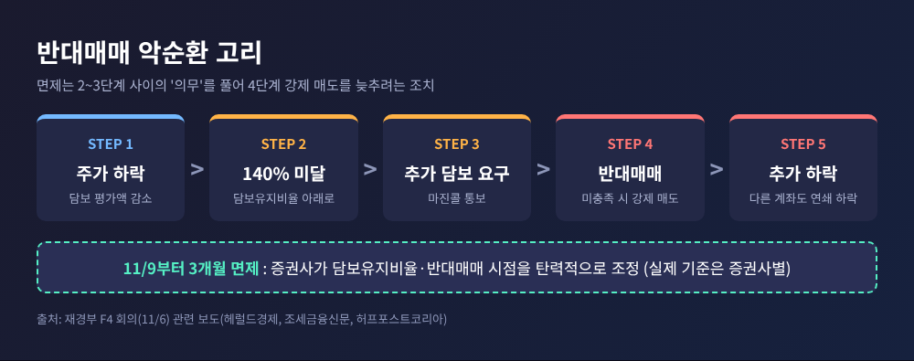
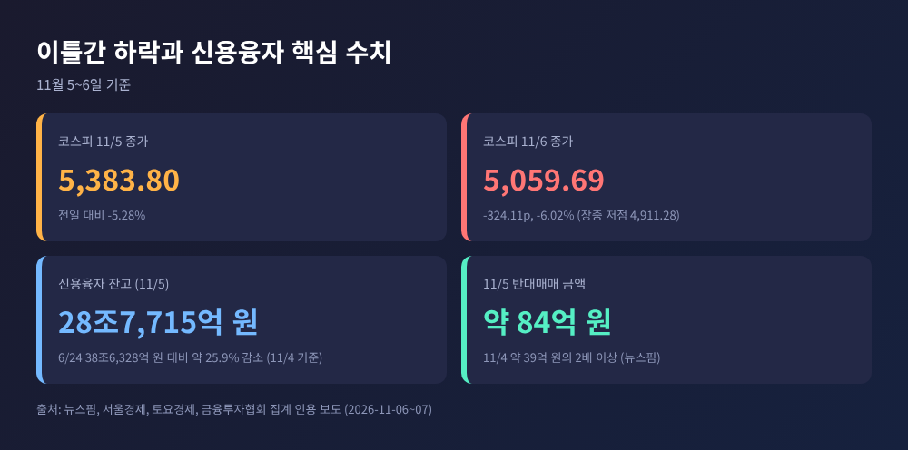
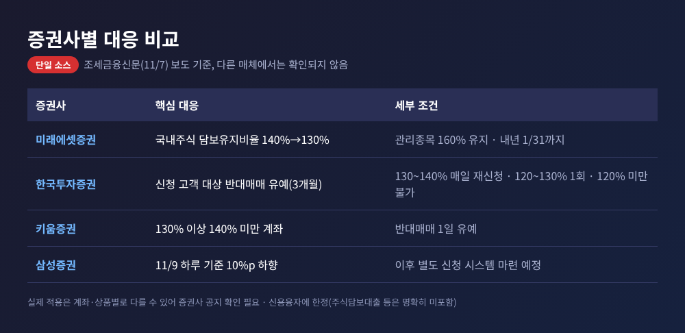
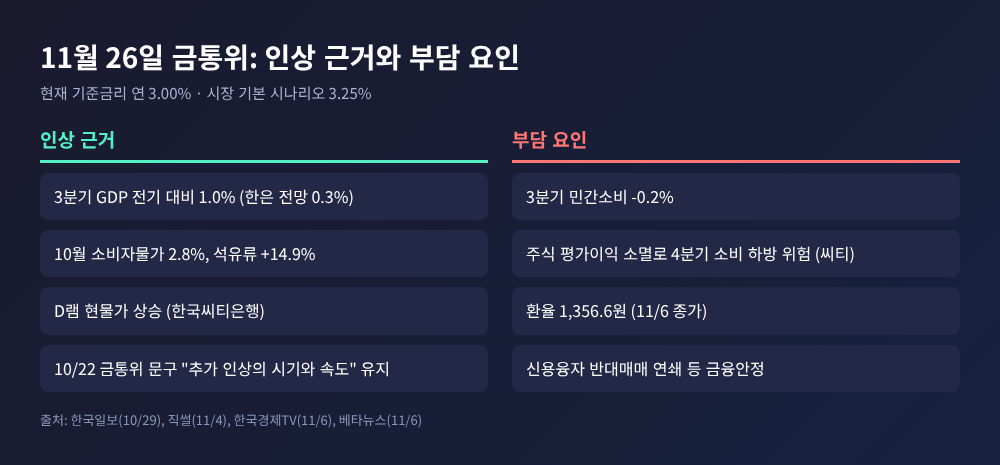
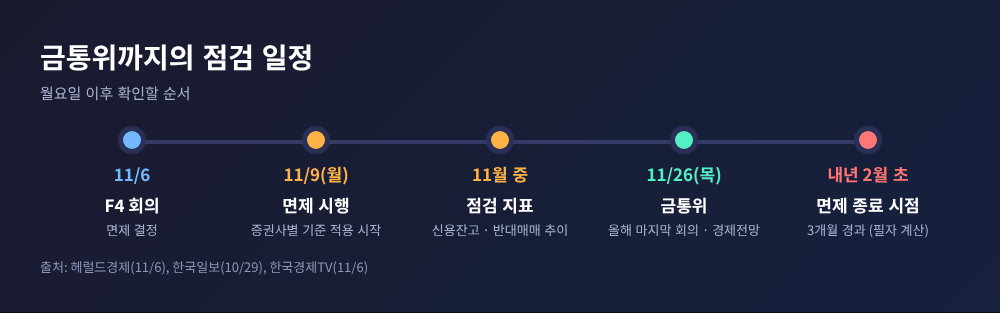
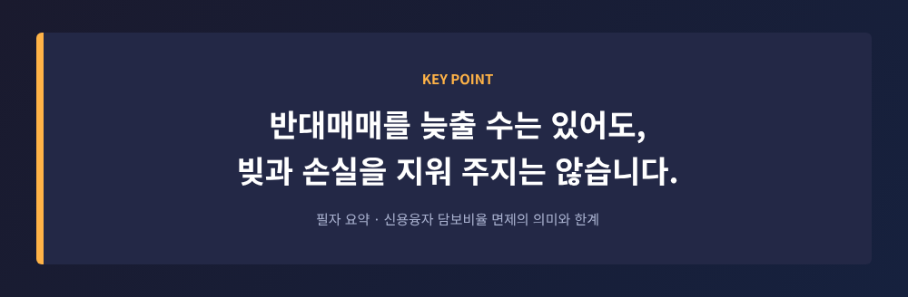

신용융자 담보비율 면제 9일 시행, 증권사 대응과 11월 금통위 변수

이번 글에서는 정부가 11월 9일부터 시행하는 신용융자 담보비율 면제를 정리해 보겠습니다.
급락 장세의 숫자보다, 이 조치가 어떤 고리를 끊으려는 것인지, 그리고 11월 26일 금융통화위원회에는 어떤 변수로 작용할지에 초점을 맞춥니다.
3줄 요약
- 정부는 11월 6일 긴급 점검회의(F4)에서 증권사 신용융자 담보비율 140% 유지 의무를 9일부터 3개월간 면제하기로 했습니다.
- 반대매매 압력은 줄지만 빚과 손실은 그대로이고, 증권사마다 실제 대응이 달라질 수 있습니다.
- 한국은행 기준금리는 연 3.00%이며, 시장은 급락장 이후에도 26일 0.25%p 인상(3.25%)을 기본 시나리오로 보고 있습니다.
■ 무슨 일이 있었나: 11월 6일 F4 회의와 3개월 한시 면제
11월 6일 오전 정부서울청사에서 긴급 시장상황점검회의가 열렸습니다.
이형일 부총리 겸 재정경제부 장관이 주재했고, 이억원 금융위원장, 이찬진 금융감독원장, 권민수 한국은행 부총재가 참석했습니다.
결론은 하나였습니다. 증권사가 신용융자에서 담보를 140% 이상 유지해야 하는 의무를 9일(월)부터 3개월간 풀어 주는 것입니다.
당국은 취지를 "주가 급락에 따른 과도한 반대매매로 시장의 변동성이 증폭되는 상황을 방지하기 위한 조처"라고 설명했습니다(조세금융신문 보도 인용).
이날 코스피는 5,059.69로 마감해 6.02% 내렸습니다. 전날(5.28% 하락, 5,383.80)과 합치면 이틀간 10.98% 빠졌고, 장중에는 4,911.28까지 밀렸습니다.
개장 직후 서킷브레이커가 발동됐고, 코스닥에는 매도 사이드카가 걸렸습니다. 원인으로는 미국 중간선거 이후 AI 데이터센터 규제 강화 우려가 꼽혔습니다.
이 글의 초점은 폭락 자체가 아니라 그 뒤에 나온 정책입니다. 그래서 지수 이야기는 여기까지만 하겠습니다.

■ 왜 중요한가: 반대매매라는 고리
신용융자는 증권사에서 돈을 빌려 주식을 사는 방식입니다. 이른바 '빚투'입니다.
주가가 내려 담보 평가액이 기준 아래로 떨어지면 증권사는 추가 담보를 요구하고, 기한 안에 채우지 못하면 투자자의 주식을 강제로 팝니다. 이것이 반대매매입니다.
문제는 이 매도가 투자자의 판단과 무관하게 시장에 쏟아진다는 점입니다.
매물이 나오면 주가가 더 내려가고, 그러면 다른 계좌도 기준선 아래로 내려갑니다. 하락이 하락을 부르는 구조입니다.
수치로 보면 규모는 작지 않습니다. 금융투자협회 집계로 신용융자 잔고는 11월 4일 28조6,446억 원, 5일 28조7,715억 원이었습니다.
6월 24일의 38조6,328억 원에서 25.9% 줄었지만 여전히 20조 원대 후반입니다.
11월 5일 반대매매 금액은 약 84억 원으로, 전날(약 39억 원)의 두 배를 넘었습니다(뉴스핌).
한국일보 보도 기준으로 7월 일평균은 약 438.7억 원으로 통계 집계 이후 최고였습니다. 이 수치는 단일 소스이고 단위 환산이 필요해 참고용으로만 보시길 권합니다.
단순 계산도 있습니다. 담보비율 150%인 종목이 하루 7.57% 내리면 약 138.6%, 9.46% 내리면 약 135.8%가 됩니다.
삼성전자와 SK하이닉스가 11월 5일 기록한 낙폭입니다. 이자와 수수료를 뺀 단순 계산이지만, 하루 만에 140% 선이 무너질 수 있음을 보여 줍니다.

■ 쟁점 1: 증권사마다 다르게 적용된다
면제는 의무를 없애는 것이지, 모든 계좌의 반대매매를 멈추는 것이 아닙니다.
실제 기준은 증권사가 정합니다. 허프포스트코리아도 "반대매매가 전부 중단되는 것은 아니다"라고 짚었습니다.
조세금융신문은 대형사 네 곳의 대응을 정리했습니다. 이 내용은 다른 보도에서 확인하지 못한 단일 소스입니다.
미래에셋증권은 9일부터 국내주식 담보유지비율을 130%로 낮추고 내년 1월 31일까지 적용한다고 했습니다.
한국투자증권은 신청 고객에 한해 3개월간 반대매매를 유예하되, 담보비율 구간에 따라 재신청 횟수를 달리합니다. 키움증권은 130% 이상 140% 미만 계좌의 반대매매를 하루 유예하고, 삼성증권은 9일 하루 기준을 10%포인트 낮춘 뒤 별도 신청 체계를 마련할 계획입니다.

같은 3개월 면제라도 투자자가 받는 결과는 계좌와 증권사에 따라 갈릴 수 있습니다.
신청이 필요한 곳이 있고, 기준이 하향되는 곳이 있으며, 대상 상품도 신용융자에 한정됩니다. 주식담보대출 등은 명확히 포함되지 않았다고 보도되었습니다.
■ 쟁점 2: 선례와 한계
이런 조치가 처음은 아닙니다. 2022년 7월에도 7월 4일부터 9월 30일까지 3개월간 같은 면제가 있었습니다(파이낸셜뉴스 당시 보도 확인).
2020년 3월 코로나19 충격 때는 6개월간 면제했다는 보도도 있습니다만, 이는 단일 소스이고 다른 매체는 시행 연도를 달리 적어 두었습니다.
한계도 분명합니다. 뉴스핌은 이 조치가 "반대매매 부담만 줄였다"고 평가했습니다.
투자자의 대출과 손실이 줄어드는 것은 아니어서, 주가가 더 내리면 손실과 증권사의 채권 회수 부담이 함께 커집니다.
토요경제는 반대매매를 미루는 동안 하락이 이어지면 투자자 손실과 증권사 신용위험이 같이 커질 수 있다고 지적했습니다.
증안펀드나 공매도 금지 같은 카드는 이번에 나오지 않았습니다. 2020년 증안펀드 규모는 10.7조 원이었습니다(뉴스핌 비교).
김상봉 한성대 교수는 외부 충격 성격이 강하다며 증안펀드에는 신중한 입장입니다. 정부는 변동성이 커지면 추가 조치를 준비하겠다고만 밝혔고, 형태와 발동 조건은 공개하지 않았습니다.
■ 11월 26일 금통위에는 어떤 변수인가
현재 한국은행 기준금리는 연 3.00%입니다. 10월 22일 금통위는 만장일치로 동결하면서도 '추가 인상의 시기와 속도'라는 문구를 남겼습니다.
시장의 기본 시나리오는 26일 0.25%p 인상, 즉 3.25%입니다. 3분기 성장률이 전기 대비 1.0%로 한은 전망(0.3%)의 세 배를 넘었고, 10월 소비자물가는 2.8%였지만 석유류는 14.9% 올랐습니다.
급락장은 이 계산을 바꿀까요. 한국씨티은행은 아니라고 봅니다.
씨티는 11월과 내년 2월에 각각 0.25%p 인상할 가능성이 크다고 전망했습니다. 신현송 총재가 메모리 기업 주가보다 실제 메모리 가격을 봐야 한다고 강조했다는 점, D램 현물가가 계속 오르고 있다는 점이 근거입니다.
다만 부담 요인도 있습니다. 같은 보고서는 4분기 민간소비의 하방 위험이 크다고 보았습니다. 주가가 빠지며 가계의 주식 평가이익이 거의 사라졌다는 분석입니다.
3분기 민간소비는 이미 0.2% 감소했습니다. 신 총재는 10월 22일 "약간의 소비 조정이 일시적으로 있다"고 평가했지만, 이는 11월 6일 급락 이전의 발언입니다. 이후 총재 발언은 확인되지 않았습니다.
여기서 신용융자 면제의 의미를 필자 나름으로 해석해 보겠습니다. 이 조치는 금융시장 안정을 담당하는 부처 차원의 완충 장치입니다.
통화정책의 방향을 바꾸는 신호는 아닙니다. 다만 반대매매 연쇄가 현실화되면 금융안정 변수가 커지므로, 금통위가 그 상황을 살필 가능성은 열려 있습니다. 이는 해석이며 확인된 사실이 아닙니다.

■ 환율과 한미 금리차
11월 6일 원·달러 환율은 1,356.6원에 마감해 14.5원 올랐습니다. 장중에는 1,362.2원까지 올라 약 한 달 만의 최고 수준이었습니다(베타뉴스).
외국인이 유가증권시장에서 약 2조8,000억 원을 순매도했고, 10월 30일부터 6거래일 연속 순매도가 이어졌습니다. 수출기업의 달러 매도가 추가 상승을 제한할 수 있다는 분석도 있었습니다.
금리차는 환율의 또 다른 축입니다. 미국 기준금리 상단은 4.00%로, 한국과 1%포인트 차이입니다(한국일보).
한은이 3.25%로 올리면 단순 계산상 격차는 0.75%포인트로 좁아집니다.
여기에 미국 10월 고용이 예상을 웃돌아 12월 인상 기대가 강해졌다는 보도가 있었습니다(뉴데일리, 단일 소스). 한미 금리차를 다시 벌릴 수 있는 변수입니다.
정리하면 환율은 금통위 앞에서 '인상을 서두를 이유'와 '소비를 걱정할 이유'를 동시에 키웁니다.
어느 쪽이 무겁게 작용할지는 아직 알 수 없습니다. 환율과 금통위를 직접 연결한 전문가 분석은 이번 조사에서 확인하지 못했습니다.
■ 전망: 월요일 이후 지켜볼 세 가지
첫째, 증권사별 실제 적용입니다. 담보유지비율을 얼마로 낮추는지, 신청제인지 일괄 적용인지에 따라 효과가 달라집니다.
둘째, 신용잔고와 반대매매 금액의 추이입니다. 토요경제도 이 지표들과 외국인 수급을 효과 판단의 기준으로 꼽았습니다.
셋째, 3개월 뒤의 처리입니다. 면제는 내년 2월 초 무렵 끝나므로(필자 계산) 연장 여부가 다음 쟁점이 될 것입니다.
증권사들의 진단도 엇갈립니다. 메리츠증권은 메모리 수요에 이상 신호가 없다고 보았고, 신한투자증권은 AI 기업의 현금흐름 개선이 확인되기 전까지 불안이 이어질 수 있다고 보았습니다.
11월 6일 미국 시장이 나스닥 1.09% 상승으로 반등했지만, 주간으로는 3.4% 하락해 4주 연속 내림세였습니다. 월요일 한국 시장의 반응은 아직 알 수 없습니다.

마지막으로 한 가지만 덧붙이겠습니다.
이번 조치는 불을 끄는 소방호스라기보다, 불길이 번지는 통로 하나를 닫는 방화문에 가깝습니다.

11월 26일의 결정을 앞두고 우리가 확인할 것은 지수의 높낮이보다 물가, 성장, 그리고 금융 안정의 균형입니다. 그 균형이 어디로 기울지는 이번 달 숫자가 말해 줄 것입니다.
유의사항 이 글은 공개된 언론 보도를 바탕으로 한 정보 제공이며, 투자 권유가 아닙니다. 투자 판단과 그에 따른 손실의 책임은 투자자 본인에게 있습니다. 개별 계좌의 담보비율과 반대매매 조건은 이용 중인 증권사의 공지와 약정으로 확인하시기 바랍니다. 금융위원회 보도자료 원문은 직접 확인하지 못했고, 일부 수치는 단일 소스입니다.
출처 헤럴드경제·뉴스핌·서울경제·토요경제·조세금융신문·한국일보·한국경제TV·베타뉴스·뉴데일리·직썰·파이낸셜뉴스 등(2026-11-06~07 보도 중심)